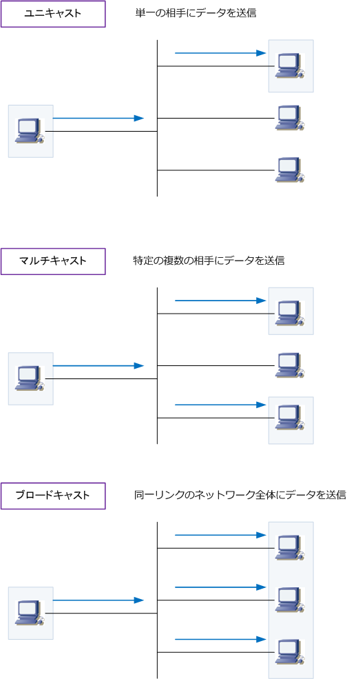
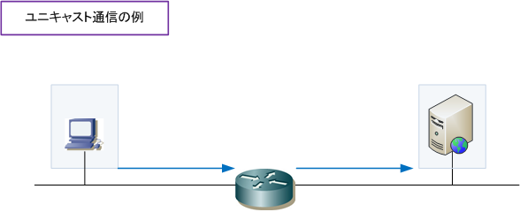
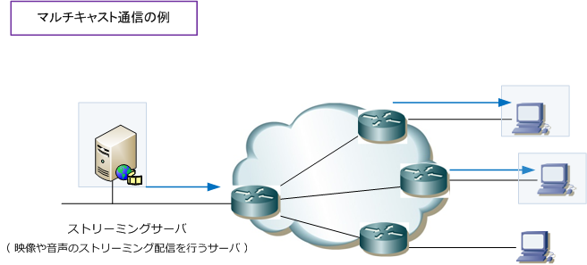
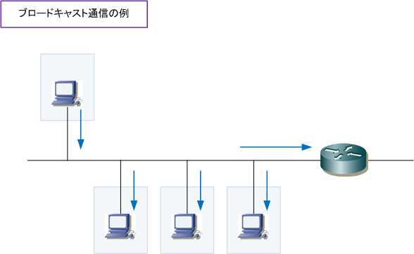

unicast / multicast / broadcast
ユニキャスト、マルチキャスト、ブロードキャストとは
コンピュータネットワークで通信を行う場合、通信相手の数によって以下の3種類の通信に分類できます。
| 通信方式 | 説明 |
|---|---|
| ユニキャスト | ユニキャストとは、単一のアドレスを指定して、1対1で行われるデータ通信のことです。 |
| マルチキャスト | マルチキャストとは、特定のアドレスを指定して、1対複数で行われるデータ通信のことです。 |
| ブロードキャスト | ブロードキャストとは、同じデータリンク内の全宛先を指定し、1対不特定多数で行われるデータ通信。 |

ユニキャスト、マルチキャスト、ブロードキャストの用途
ユニキャスト通信は、通信相手先を指定して1対1で通信するわけであり、もっとも標準的な通信といえます。 例えば今、あなたのPCは私のWebサーバとユニキャスト通信をすることでこのWebサイトを閲覧しています。 このように、Webサイトの閲覧、電子メールの送受信など、色々な用途で最も使用されている通信方式です。

マルチキャスト通信は、マルチキャストアドレスという特殊なアドレス（224.0.0.0～239.255.255.255） を使用して、特定のグループに所属する全てのPCにデータを送る通信方式です。このマルチキャスト通信は ネットワーク上の動画配信などでよく使用されます。マルチキャストなら、送信元のコンピュータが送信する １つのパケットをマルチキャスト対応ルータなどで複製し、同時に宛先の数だけそのパケットを送信します。

ユニキャストであると通信したい宛先に１つずつパケットを送出する必要があり、動画や音楽などを容量 の大きいデータを多数の宛先に送信するためには非常に負荷がかかるので、マルチキャストは効率的です。
ブロードキャスト通信は、ブロードキャストアドレスというアドレスを使用して同一LANの全てのノードに データを送る通信方式です。ブロードキャストの用途として、IPアドレスからMACアドレスの情報を求める ARPで利用したり、IPアドレス取得のためDHCPで利用したりルーティング情報のアップデートで使用します。 ブロードキャスト通信は、ユニキャスト通信を実現する上で最初に行われる大切な通信であるとも言えます。

ブロードキャストアドレスはホスト部が「255」となります。例えば「192.168.1.0/24」のネットワークでは 192.168.1.255がブロードキャストアドレスとなります。なお、DHCPでIPアドレスを取得する際にLANで 使用されるブロードキャストアドレスは、255.255.255.255（リミテッドブロードキャストアドレス）です。
※ ブロードキャスト通信は同一のLANでだけ配信されるので、ルータ等のL3機器を超えることはできません。